Instruction is the most critical work that I engage in as a teacher. Over the years, my teaching style has evolved as I have gained more experience. I have grown in my ability to communicate mathematics more effectively through the feedback and evalutions I have received from advisors and colleagues. But the biggest source of insight with regards to improving my teaching has been from conversations with my students. My reflections on these conversations have led me to a basic philosophical goal as a mathematics instructor - to effectively support my students' engagement in deep mathematical ideas and to encourage peer to peer collaboration among them so as to make them better and deeper thinkers. Below, you can find some examples of how I have applied this philosophy in my teaching.
When teaching calculus, I like to give students the historical context for how Newton developed the ideas of calculus. I begin the course by placing the mathematics in its historical context and making connections between the ideas we study in the mathematics classroom with other disciplines. You can find my notes on the history of calculus here: The Story of Calculus.
Part of the lecture focuses on the role that Archimedes played in insipiring Newton- in particular, his idea to approximate the area of a circle using the method of exhaustion. I wrote a simulation to illustrate this for the students. The video below shows Archimedes' method applied to a circle of radius one, with the area of the circle being printed to the left side of the screen as the number of sides of the inscribed polygons increases.
You can find the code for the simulation above in Domain I
In Math 433, when we studied fractional exponents, I wanted to have students implement a practical example of the ideas they just learned. To that end, I designed a lesson on fractional exponents applied to electric circuits. After teaching the theory, I had the class work in groups to physically reproduce their calculations with real-world circuits. The goal here was to show a real-world application of mathematics and also to emphasize the organic relationship between theory and application in mathematics.
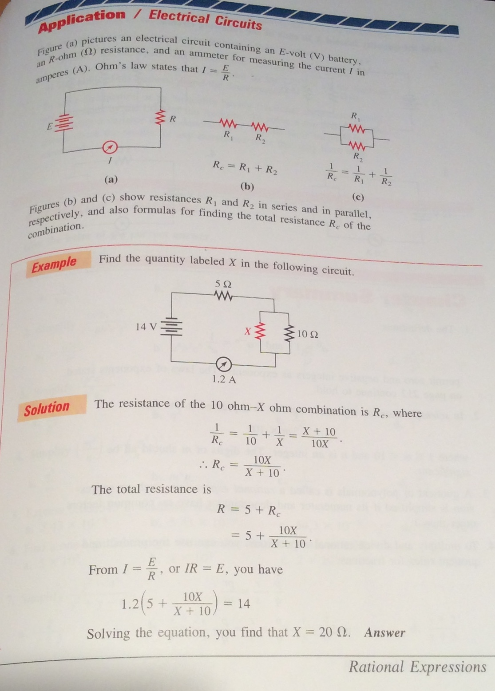 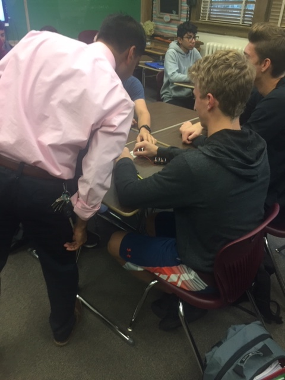 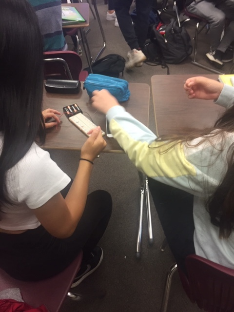 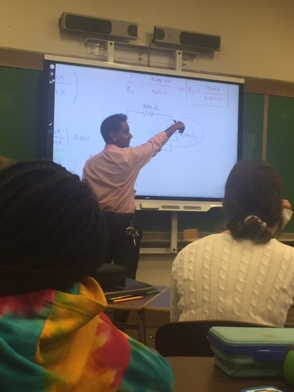 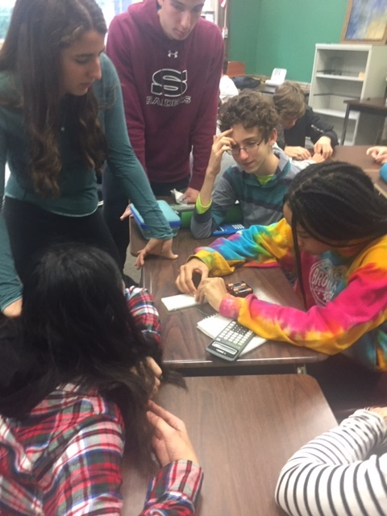 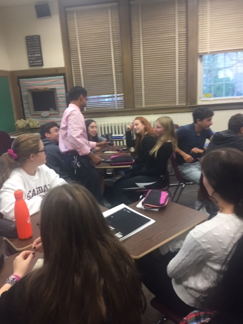
In Math 454, one of the most enjoyable lessons we did as a class this year was on Halloween. I designed an "Escape Room", in which the students had to solve Calculus problems and unlock a series of locks which would lead them to a final prize. The goal of the lesson was to have the students actively engaged in an activity that they would enjoy, while also reinforcing the concepts we had learned in the class prior to this point.
- Calculus Escape Room Scenario
- Teacher Instructions
- Sample Clue 1
- Sample Clue 2
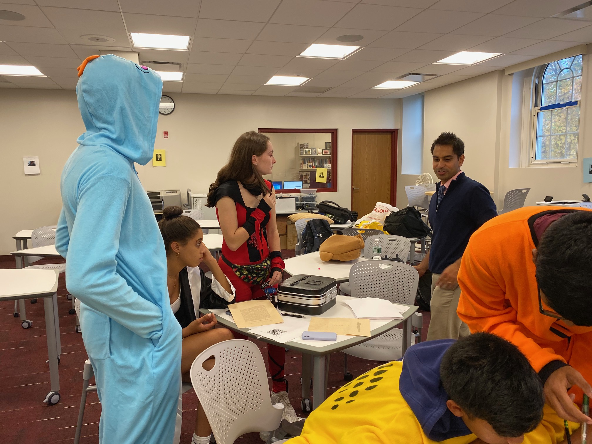 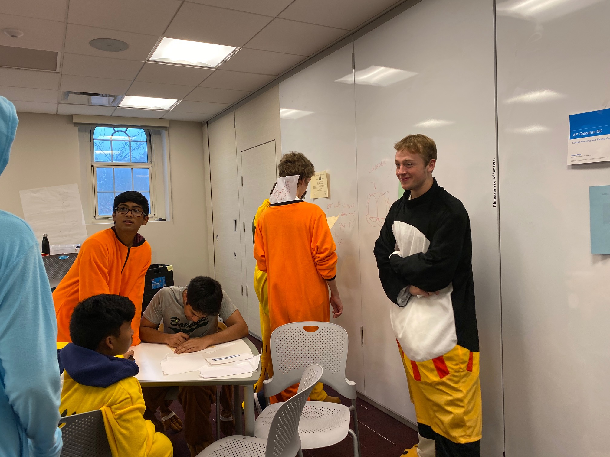 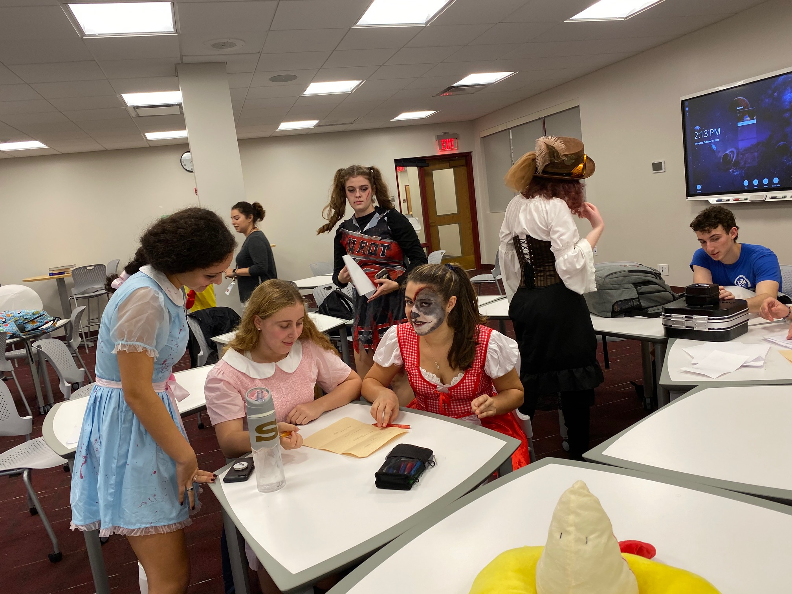
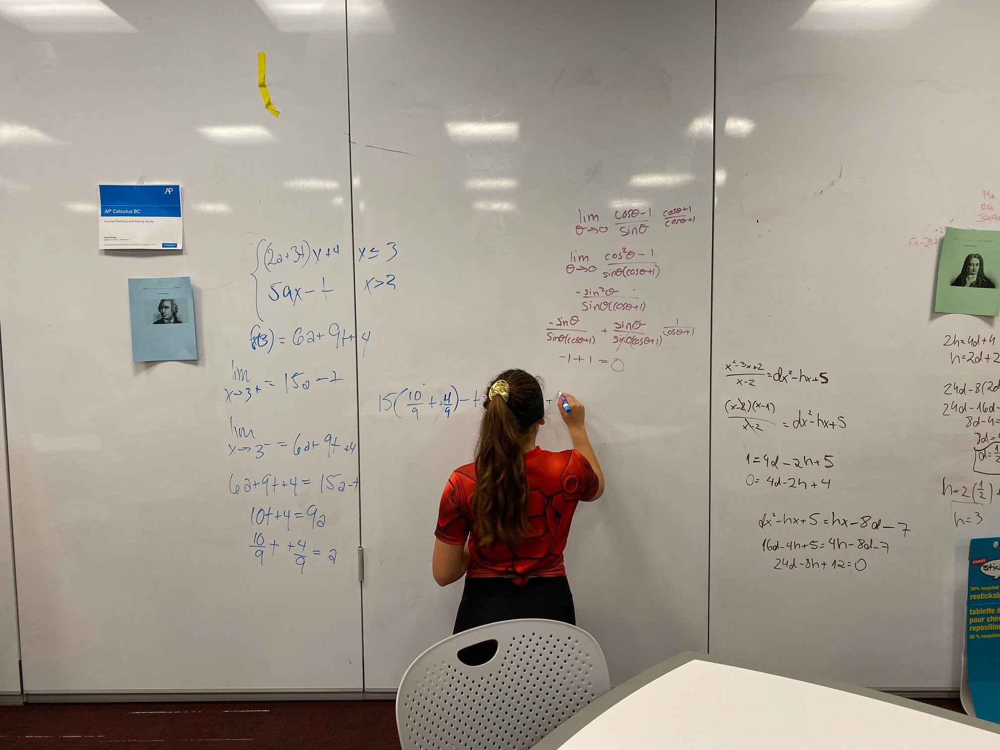 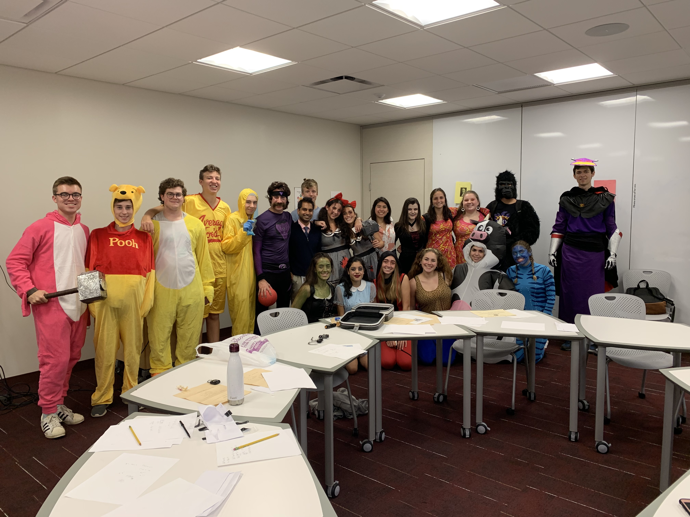